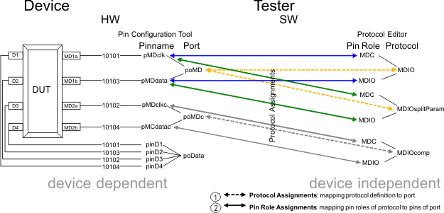

Protocol based terms put into perspective
The graphic below illustrates how the device pins are mapped to pin roles of.

The protocol is defined in the protocol editor. As such it is device independent. The dependency is made in the protocol assignment editor. First, one has to assign the protocol to a port. Second, the roles of that protocol are mapped to a pin of the selected port.
Note One port can be assigned to multiple protocols.
From the above graphic it becomes clear why a transaction, like write, is defined per pin role in the protocol editor.
Note The protocol will be executed in a multiport burst. Thus device
pins that are not incorporated into the protocol have to be defined in a separate port(s) with a
vector sequence that can be executed together with the protocol based test.
Functional changes
- Introduced in SmarTest 7.1.2